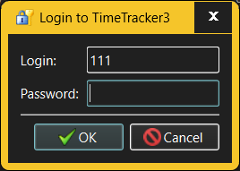

The Login dialog is the first thing the user must interact with when starting TimeTracker3. It established the user's credentials, which then are used to decide what the user can or cannot do within TimeTracker3.

The fields in the Login dialog allow the user to specify:
Note that user's credentials (login + password) that grant access to one TimeTracker3 workspace may or may not grant access to a different workspace; nor is the same Account (i.e. an Account with the same login and password) defined in two different workspaces required to grant the same access rights.
When, after logging in, the user attempts to open a workspace where the specified login credentials do nor grant access, TimeTracker3 will prompt the user to enter different credentials, which do grant such access, using the same Login dialog.
While working, the user can, at any time, choose to re-login with different credentials. A typical example is a power user, who will re-login temporarily with extended (or even a full administrator) access rights to perform workspace administration tasks (such as workspace backup) and then re-login with their everyday credentials to continue the daily work.
When TimeTracker3 runs without a workspace (when first started, or when the user forcibly closes the active workspace) the login credentials entered by the user are not used - but then no useful work can be done until some workspace is opened again (or a new one created).
See also: -